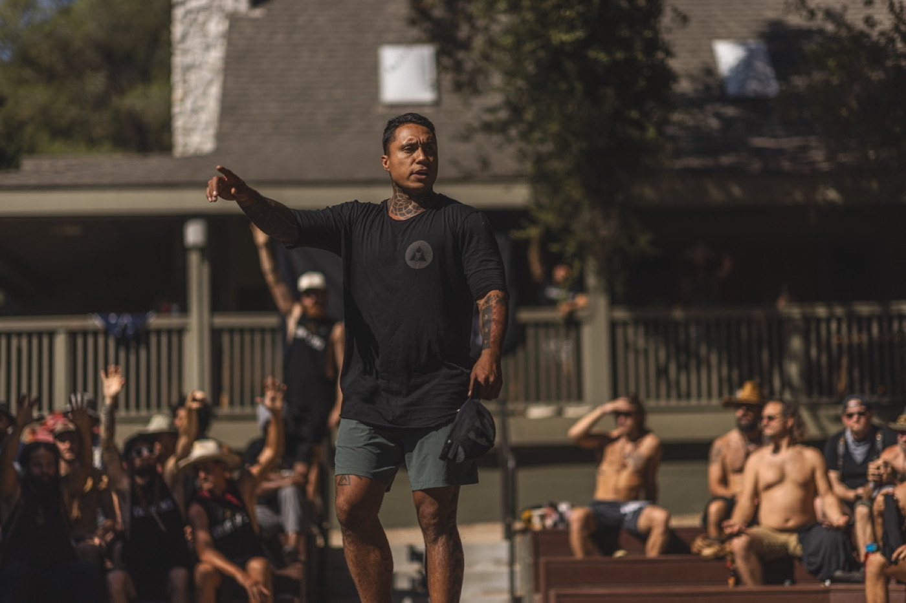

About
Kale Kaʻalekahi
Ordained Minister, Educator, Teacher, and custodian of land and sea.
Over 20 years, I have taught relational dynamics and earth-based and Indigenous knowledge. My focus is connection: how people relate to each other, and how to make those relationships stronger. For more than a decade I have guided rites of passage and mentorship for children, adults and elders. Over 15 years, I have officiated for more than 1,000 couples and led ceremonies of every kind, from weddings and ʻohana blessings to memorials and land blessings.
My work comes back to one thing: helping people find connection and belonging, to each other and to the places they live. Whether I am officiating, speaking, mentoring someone, or moving with a large group in cultural immersion, I am there for depth and meaning.
Work with Kale